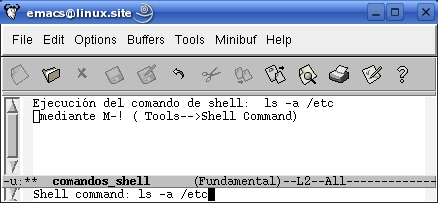
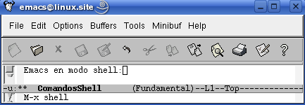

12. Emacs y la Shell
Pág.Anterior | Índice | Pág.Siguente
Ya comentamos que Emacs es algo más que un editor de textos. Desde Emacs podemos realizar tareas tan variadas como ejecutar comandos shell, gestionar directorios y archivos, enviar y recibir correo...etc.
Todas estas tareas implican un importante grado de integración de Emacs con el sistema operativo y, aunque Emacs es esencialmente un editor del entorno Unix, es posible, también, su integración con otros sistemas operativos.
Siguiendo la tónica de este manual, vamos a centrarnos en la utilización de Emacs como entorno de trabajo en sistemas Unix, aunque las explicaciones que se den son facilmente "traducibles" a otros sistemas operativos.
En el presente capítulo vamos a tratar sobre la utilización de Emacs como medio para la ejecución de comandos shell desde dos aspectos:
- Ejecución de comandos shell desde una sesión de Emacs.
- Emacs en modo shell.
12.1 Ejecutar comandos shell desde un buffer.
Pág.Anterior | Índice | Inicio Página | Pág.Siguente
La posibilidad de ejecutar ccomandos de shell desde un buffer de Emacs es, posiblemente, una de las características más apreciadas de la aplicación. Y ellos por, entre otras, las siguientes razones:
- Puede guardarse el buffer de shell, manteniendo constancia escrita de la sesión.
- Pueden copiarse comandos complejos en un archivo e insertar dicho archivo en el prompt, evitando así tener que teclearlos de nuevo.
- Pueden irse copiando los outputs de los comandos en archivos o en otros comandos.
- En definitiva, es posible utilizar todas las características de edición que nos proporciona Emacs y aplicarlas al trabajo con comandos shell
Para ejecutar un comando shell desde una sesión de Emacs tenemos varias opciones:
- Opción de menú : Tools-->Shell Command..
- Comando : M-!
- Comando "largo" : M-x shell-command <Enter>
Este comando opera de la siguiente forma:
|  |
Una variación del anterior comando es el siguiente:
- Comando : C-u M-!
Con dicho comando , la salida del comando shell no se muestra en la *Shell Command Output* , sino en el buffer activo: Se inserta a partir de la posición del cursor:
Una de las ventajas más interesantes de utilizar Emacs para la ejecución de comandos shell es la posibilidad de utilizar regiones de un buffer como inputs de comandos, como si se trataran de archivos. El comando utilizado para ellos es:
- Comando : M-|
- Comando "largo" : M-x shell-command-on-region <Enter>
La forma de operar con este comando es la siguiente:
Introducimos el comando que deseamos ejecutar, sin especificar input. Emacs tomará como input la región seleccionada: :
Tras pulsar <Enter> , el outoput se nos presenta en una nueva ventana *Shell Command Output* :
12.2 Emacs en modo shell.
Pág.Anterior | Índice | Inicio Página | Pág.Siguente
Puede abrirse un buffer de shell y trabajar en el como si de una cónsola se tratara. Pero con todas las ventajas que nos proporciona la capacidad de edición de Emacs.
Abrir un buffer de shell no es otra cosa que abrir un buffer con el modo mayor shell-mode. Para ello utilizamos el siguiente comando:
- Comando "largo" : M-x shell <Enter>
|  |
Vemos que tras ejecutar el comando se nos ha abierto una ventana, *shell* , conteniendo el prompt correspondiente. Observemos también el modo mayor de dicha ventana: Shell.
En la barra de menús han aparecido dos nuevas opciones: In/Out y Signals
Una observación: En el modo shell, por defecto, se muestra todo lo que tecleamos, passwords inclusive. Si deseamos que el texto que vayamos a teclear sea invisible debemos operar de la siguiente manera:
Antes de teclear el texto que deseamos ocultar, ejecutar el comando :
M-x send-invisible <Enter>.
Emacs nos pedirá , mediante un mensaje en el mini-buffer, ( Non echoed text: ), que introduzcamos el texto que desamos ocultar.
A medida que vayamos introduciendo el texto, Emacs lo irá mostrando como una sucesión de carácteres *
Pulsando <Enter> , el texto se introducirá en la posición del cursor, sin mostrarse en pantalla.
Si deseáramos ocultar los passwords cuando los tecleamos, debemos añadir las siguientes dos líneas al archivo .emacs:
(add-hook 'comint-output-filter-functions
'comint-watch-for-password-prompt)
Siempre que aparezca la solicitud ede un password en el prompt, Emacs nos solicitará que introduzcamos el texto en el mini-buffer.
Se pueden tener múltiples buffers de shell abiertos a la vez.
Podemos renombrar un buffer de shell mediante el siguiente comando:
M-x rename-uniquely <Enter>.
Emacs irá numerando los buffers de shell.
12.3 Comandos del entorno shell.
Pág.Anterior | Índice | Inicio Página | Pág.Siguente
Además de los vistos en las anteriores secciones, el entorno shell dispone de una serie de comandos, la mayoria de ellos ejecutables atraves de las opciones de menú In/Out y Signals. Vamos a relacionar sólo las consideradas, más relevantes. Es recomendable "explorar" y experimentar con las opciones de menú propias del entorno shell que nos ofrecen.
| In/Out | Signals |
|---|---|
- Opción de menú : Signals-->BREAK
- Comando : C-c C-c
- Comando "largo" : M-x comint-interrupt-subjob <Enter>
- Interrumpe la tarea en curso.
- Opción de menú : Signals-->STOP
- Comando : C-c C-z
- Comando "largo" : M-x comint-stop-subjob <Enter>
- Suspende o para una tarea en curso.
- Opción de menú : Signals-->CONT
- Reanuda la tarea suspendida.
- Opción de menú : Signals-->QUIT
- Sale de la tarea iniciada.
- Opción de menú : Signals-->EOF
- Comando : C-c C-d
- Comando "largo" : M-x comint-send-eof <Enter>
- Envia un carácter EOF.
- Opción de menú : Signals-->KILL
- Finaliza el proceso de shell.
- Comando : C-d
- Comando "largo" : M-x comint-delchar-or-maybe-eof <Enter>
- Envia un carácter EOF si está al final del buffer. En otro caso, elimina el carácter.
- Comando : C-c C-u
- Comando "largo" : M-x comint-kill-input <Enter>
- Elimina la linea corriente.
- Comando : <Enter>
- Comando "largo" : M-x comint-send-input <Enter>
- Envia input a la linea corriente.
- Comando : <Tab>
- Comando "largo" : M-x comint-dynamic-complete <Enter>
- Completa el nombre del comando, archivo, variable..etc.
- Comando : C-c C-r
- Comando "largo" : M-x comint-show-output <Enter>
- Mueve la primera linea de output a principio de la ventana.
- Opción de menú : In/Out-->Previous Input
- Comando : M-p
- Comando "largo" : M-x comint-previous-input <Enter>
- Recupera comandos anteriores.
- Opción de menú : In/Out-->Next Input
- Comando : M-n
- Comando "largo" : M-x comint-next-input <Enter>
- Recupera subsiguientes comandos.
- Opción de menú : In/Out-->Delete Current Group
- Comando : C-c C-o
- Comando "largo" : M-x comint-kill-output <Enter>
- Elimina el output del último comando.
- Opción de menú : In/Out-->Show Maximum Output
- Comando : C-c C-e
- Comando "largo" : M-x comint-show-maximum-output <Enter>
- Mueve la última linea del output al final de la ventana.
- Opción de menú : In/Out-->Backward Output Group
- Comando : C-c C-p
- Comando "largo" : M-x comint-previous-prompt <Enter>
- Mueve al comando previo.
- Opción de menú : In/Out-->Forward Output Group
- Comando : C-c C-n
- Comando "largo" : M-x comint-next-prompt <Enter>
- Mueve al siguiente comando.
12.4 Elección de la shell.
Pág.Anterior | Índice | Inicio Página | Pág.Siguente
En entornos Unix, Emacs utilizará, en la ventana de shell, la shell que estemos usando en la terminal.
Si se deseara utilizar en Emacs una shell distinta a la del equipo, debemos añadir la siguiente linea en el archivo .emacs: (setq shell-file-name "/bin/shell")
En esta línea deberiamos sustituir shell por el nombre de la shell a utilizar ( zhs, bash,...etc.